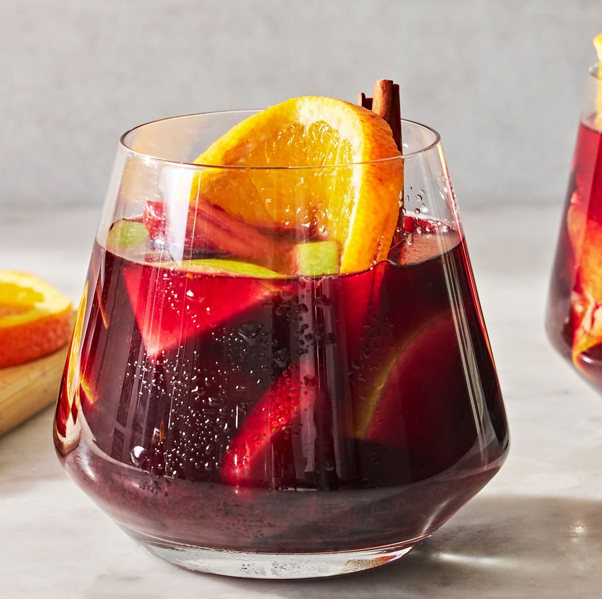

Sangria

Description
Sangria is a refreshing and fruity Spanish beverage that embodies the spirit of relaxation and enjoyment. It is traditionally made by combining red or white wine with fresh fruits, such as oranges, lemons, and apples, along with a touch of sweetness from sugar or honey, and a splash of brandy or liqueur for added depth of flavor.
Ingredients
- 1 (750-ml.) bottle red wine
- 3/4 c. fresh orange juice
- 1/2 c. brandy
- 1/4 c. granulated sugar
Steps
- In a large pitcher, mix wine, orange juice, brandy, and granulated sugar. Stir in oranges, apples, blueberries, strawberries, and cinnamon.
- Refrigerate until ready to serve, at least 2 hours or preferably overnight.